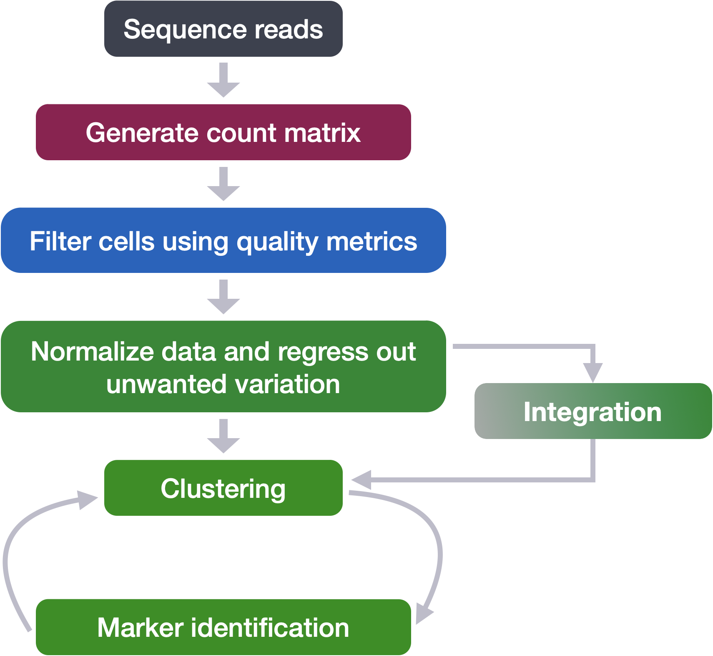
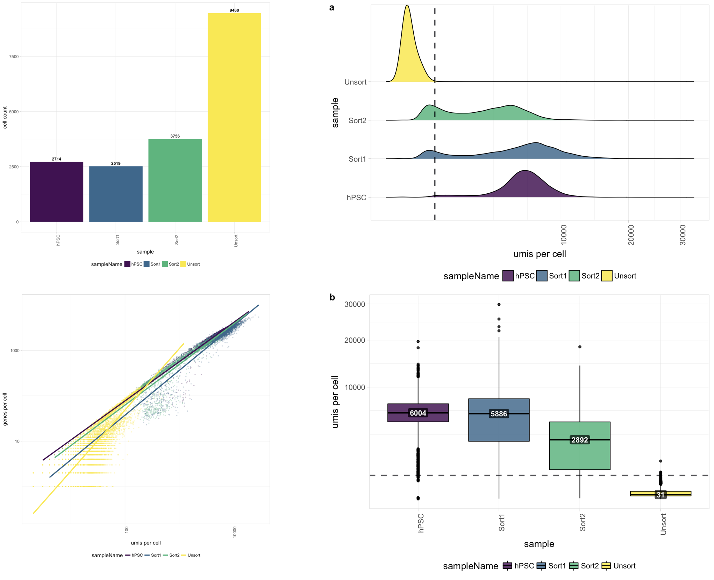
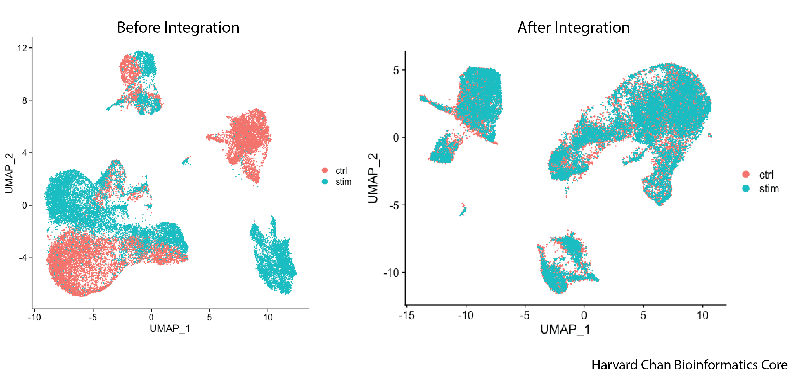
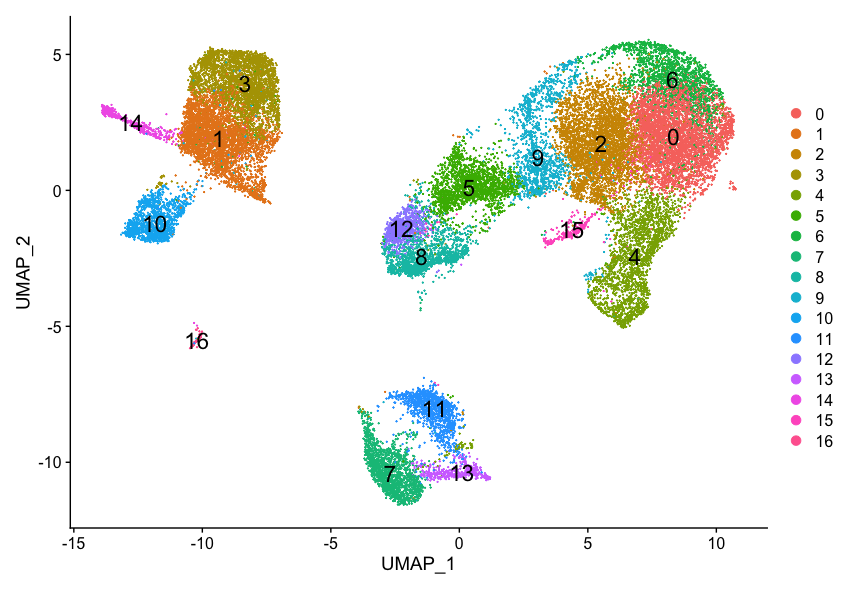
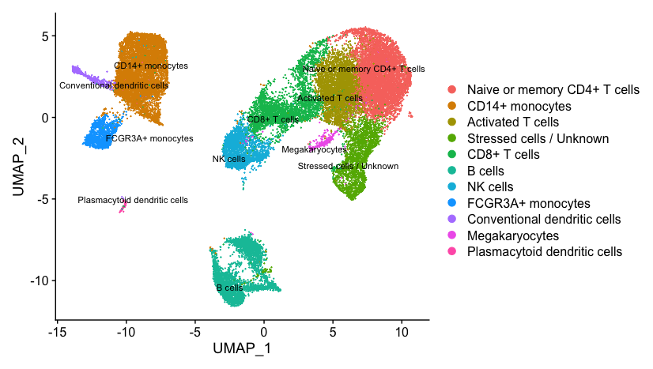

Single-cell RNA-seq: From Counts to Clusters
Approximate time: 20 minutes
Learning Objectives:
- Describe the workflow for single-cell RNA-seq analysis starting from a count matrix through to annotated celltypes
Single-cell RNA-seq Workflow
In this lesson, we will highlight the important steps involved in a typical workflow for the analysis of single cell RNA-seq data. If you are looking for more in-depth information on the background and theory for each step, we suggest looking at the Introduction to scRNA-seq workshop materials.

Filtering data
The first step is to take the raw count data and use various metrics to identify true cells that are of high quality, so that when we cluster our cells it is easier to identify distinct cell type populations. Visualizing metrics with plots allows us to evaluate all samples within a dataset and isolate any problematic samples. Additionally, we can more easily decide on suitable thresholds for cell-level filtering. We want to be able to keep as many high quality cells as possible without removing biologically relevant cell types. Gene-level filtering is also applied at this stage.

Clustering workflow
For something to be informative, it needs to exhibit variation, but not all variation is informative. The goal of our clustering analysis is to keep the major sources of variation in our dataset that should define our cell types, while restricting the variation due to uninteresting sources of variation (sequencing depth, cell cycle differences, mitochondrial expression, batch effects, etc.). Then, to determine the cell types present, we will perform a clustering analysis using the most variable genes to define the major sources of variation in the dataset.
The workflow for this analysis is adapted from the following sources:
- Satija Lab: Seurat v3 Guided Integration Tutorial
- Paul Hoffman: Cell-Cycle Scoring and Regression
To identify clusters, the following steps are performed:
1. Explore sources of unwanted variation
The first step in the workflow is to see if our data contains any unwanted variability. The most common biological effect that is evaluated in single-cell RNA-seq data is the effect of cell cycle on the transcriptome. Another known biological effect is mitochondrial gene expression, which is interpreted as an indication of cell stress. This step of the workflow involves exploring our data to identify which covariates we would like to regress out.

2. Normalization and regressing out sources of unwanted variation
Normalization is required to scale the raw count data to obtain correct relative gene expression abundances between cells. The sctransform function implements an advanced normalization and variance stabilization of the data. The sctransform function also regresses out sources of unwanted variation in our data. In the previous step, we had identified these sources of variability, and here we specify what those covariates are.

Image credit: Hafemeister C and Satija R. Normalization and variance stabilization of single-cell RNA-seq data using regularized negative binomial regression, Genom Biology 2019 https://doi.org/10.1101/576827
3. Integration
Often with single cell RNA-seq we are working with multiple samples which correspond to different sample groups, multiple experiments or different modalities. If we want to ultimately compare celltype expression between groups it is recommended to integrate the data. Integration is a powerful method that uses these shared sources of greatest variation to identify shared sub-populations across conditions or datasets (Stuart and Butler et al. (2018)). There are several steps involved in performing intergration in Seurat. Once complete, we use visualization methods to ensure a good integration before we proceed to cluster cells.

Integration is optional. We recommend going through the workflow without integration to decide whether or not it is necessary for your data.
4. Clustering cells
Clusters of cells are obtained by grouping cells based on the similarity of their gene expression profiles. Expression profile similarity is determined via distance metrics, which often take dimensionality‐reduced representations as input. Seurat assigns cells to clusters based on their PCA scores derived from the expression of the integrated most variable genes.

5. Cluster quality evaluation
The clusters identified in our data represent groups of cells that presumably belong to a similar cell type. Before we can confirm the celltype of a group of member cells, the following steps are taken:
- a. Check to see that clusters are not influenced by sources of uninteresting variation.
- b. Check to see whether the major principal components are driving the different clusters.
- c. Explore the cell type identities by looking at the expression for known markers across the clusters.

Marker Identification and Celltype Assignment
Often the known marker expression evaluation gives us some hints as to which celltype is represented within a cluster, but sometimes it is not so obvious. In situations where there is uncertainty of the cell type assignment it is good practice to check which genes exhibit a high expression profile among cells (i.e FindMarkers). The list of genes can provide insight on celltype and/or can be the impetus for removal of a group of cells. After this step we hope to obtain a fully annotated dataset that we can move forward with for downstream analysis.
